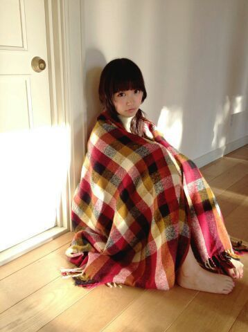

| 2014/01 17 Fri | ひめたん(*>ω<*)そ の396 |
ねーね今さらなんだけどさっ
乃木坂ちゃんの7thの制服ってさ
ミルクティーと同じ色してるって
この前気づいたの！
ミルクティー色(＊^ω^＊)るん

あのね、おともだちがね
好きなバンドさんの握手会に行ったらね
緊張してなんにも話せなかったんだってー
やっぱり握手会って
はじめましての方は緊張するのかな？
リラックスしてきてねー(〃ω〃)
ひめたんのことおともだちだと思って
気軽にお話しに来てね♪♪
とゆーことで日曜日は
幕張で個別握手会！
関東圏では今年初やーんよろしくね＊＊
なんと、ひめたん、
新しいハンドクリームを買いました( ∀ )
日曜行くよって方は なんの香りか当ててみてー♪
おにゃーのこのみなさん
握手会終わったら日記で紹介するねっ
それから これはいっつもゆってるけど
寒いので！ほんとに！まーじで
防寒してきてね(´・ω・｀)
......と言いながら会場の中は
もしかしたらあったかいかもしれないから
あのーそうだ
調節できる格好で！おなしゃーす＊＊

こんな感じで( ^O^ )もふ
あっそーいや
生写真撮影してきたーよー
いつもいろんなお洋服着るから
生写真すーき(＊´ω`＊)
時期が着たらちょっとずーつ写め解禁するねっ
次回の乃木どこは初夢占い！
実はね質問にね
ひめたんは初夢なにか見たー？って
聞いてくださった方たくさんいたんだけどね
この企画が終わったら話そうと思ってたのー
お楽しみに \( ω )/ ☆

 日芽香さんにとっての
日芽香さんにとっての
やさしさとは何ですか？
何気なく飴ちゃんくれる人とかね
ほら、歌詞の中に出てくる
ラ・フランス拾うの手伝ってくれる人は
良い人だよね(＊^^＊)
ひめたんの幸せのひとときって
やっぱり缶蹴りをしてる時ですか？笑
どーゆー経緯で
その結論に至ったのか気になって
今夜はどうも眠れそうにないなー(適当)
突然なんだけど、ひめたんって豆腐好き？←
不意打ちってやつですねー
この感じ嫌いじゃないよー( ^ω^ )
あ、豆腐はね、普通です。なんかごめん
ひめたんは鉄板そのまま派？
それとも皿派
鉄板ねー
鉄板で食すのかっこいーなーって思うんだけど
猫舌なんです私(´・ω・｀)
だからねお皿に取ります。なんならちょっと冷ます
午年と言うことで、
ひめたんのお馬さんのイメージについて
一言ください！
キュートなひづめ！
妹の誕生日にリボンのバッレタ
買ってあげたいんだけど
東京にいい店ありますか？
ステキすぎるー(´；；｀)感涙
ほら、アクセサリー屋さんまで行かなくても
ふらーっと入った雑貨屋さんとかに
かわいいとあったりするからさ
あんまし気負わずにお店入ってみたらいいと思！
ひめたんはお洋服屋さんのレジカウンター前にある
りぼんとか好きですよー♪
どこで買うとかあんま決まってなくて。
 ひめたんは地元の友達とかに
ひめたんは地元の友達とかに
「何か変わったね」とか言われなかった？
話してるとやっぱり変わってないねーって
いろんな人に言われたんだけど
果たしていいんだか悪いんだか......
広島ＦＦのテーマ曲「花車」を
歌った事あるかな？
はーながー輪にーなるー
あるよ＼ ^ω^ ／
握手するときに
言いたいことド忘れしちゃった時は
どうするのが正解?
話題を思い出すよりも
握手を楽しむことのが大事よねっ？
にこにこしてさえくだされば
あとはアイドルたちがなんとかしてくれるかなー
なーんてね☆☆
ひめたんのブログの
コメント欄下２ケタに46を踏んだ方へ
手書きでコメ返するコーナー
＼ ひめたん46 ／

いつもコメントたくさん
ありがとうございます\( ω )/
今年のバースデーライブの
当選結果が出たと風の噂で聞いたので
当選された方はよかったら
どのへんに座るのかなーとか
教えてくださったらひめたん嬉しいかなーなーんて
思ったり思わなかったり
......ま、まってるよ！
\( ω )/この子ツボだわー\( ω )/
(＊´・ω・＊)
コメント(449)
2014/01/17 23:12